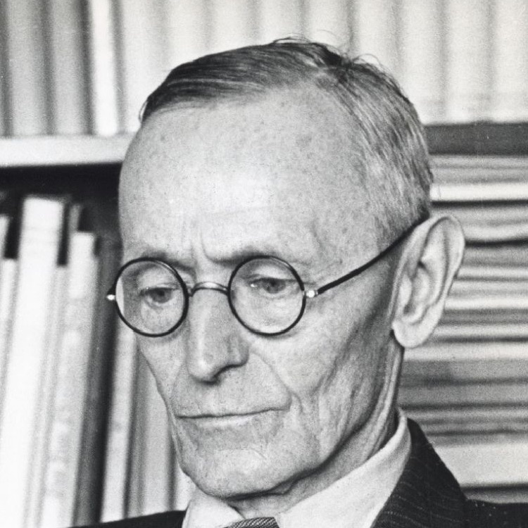
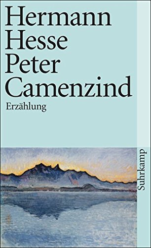
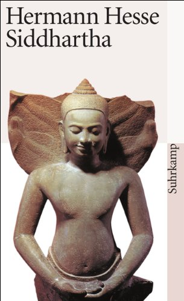
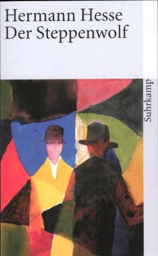
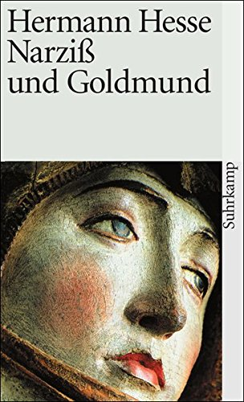

<style>
@font-face {
    font-family: helultra;
    src: url(helvetica-ultra-light.otf);
}
@font-face {
    font-family: avenext;
    src: url(AvenirNext.otf);
}
@font-face {
    font-family: avelight;
    src: url(AvenirLight.otf);
}
@font-face {
    font-family: joslab;
    src: url(joslab.ttf);
}
@font-face {
    font-family: slabo;
    src: url(slabo.ttf);
}
*{font-family: helultra; font-weight: 100;}
article{margin: 0 auto; width: 700px;}
.author img {border-radius:125px; width:125px; vertical-align: middle; margin-right: 20px;}
h1{font-size: 5em;display: inline;vertical-align: middle;}
p{font-size: 1.3em;text-align: justify; font-family: slabow; font-weight: 100; color: #555; line-height:1.3;}

.book{ display: inline-block; margin-top: 50px;}
.book img{width: 125px;margin-right:10px;}
.book .year {font-size: 2.5em; text-align: left; color: #777;}
.book .title {font-size: 2.5em;}
.book .abstract p {overflow: hidden; height: 200px; text-align: justify; font-size: 1.2em; column-count:1; font-family: slabo; font-weight: 100; color: #333; line-height:1.3;}
</style>

<article>
<div class='author'>
	
	<h1>Hermann Hesse</h1>
	<p>
	Hermann Karl Hesse war ein Schriftsteller, Dichter und Maler. Bekanntheit erlangte er mit Prosawerken wie Siddhartha oder Der Steppenwolf und mit seinen Gedichten. 1946 wurde ihm der Nobelpreis für Literatur und 1954 der Orden Pour le Mérite für Wissenschaften und Künste verliehen.
	Als Sohn eines deutsch-baltischen Missionars war Hesse durch Geburt Staatsbürger des Russischen Kaiserreichs. Von 1883 bis 1890 und erneut ab 1924 erhielt er das Bürgerrecht der Schweiz, dazwischen besaß er die Staatsbürgerschaft des Königreiches Württemberg.
	</p>
</div>


<table class='book'>
	<tr>
		<td class='year'>1904</td>
		<td class='title'>Peter Camenzind</td>
	</tr>
	<tr>
		<td class='image'></td>
		<td class='abstract'><p>In Peter Camenzind beschreibt Hesse aus der Ich-Perspektive das Leben eines Mannes, der in einem kleinen Dorf in den Bergen geboren wird. Dieser Peter Camenzind zeichnet sich durch seine überschwängliche Liebe zur Natur aus. Deshalb verbringt er viel Zeit beim Bergsteigen und Beobachten der Natur. Damit hat er viel mit Hesse gemein, der ein Verehrer der Natur war.
Der Kern der Geschichte handelt von dem innerlichen Wandel des Peter C., der neben seiner vom Vater vorgegebenen Berufs- und Lebenswahl seine Liebe zu geistiger Tätigkeit und Bildung entdeckt. Fortan setzt er sich einen urbanen Lebenswandel zum Ziel, der ihn in Städte und deren aristokratische Kreise führt. Wenige Zeit später ist er als freier Schriftsteller tätig, der größtenteils über geschichtliche Ereignisse resümiert.
Doch am Ende muss er erkennen, dass er immer der „Bauernjunge“ aus Nimikon geblieben ist, trotz seines weltmännischen Auftretens und seiner Bildung. Er bemerkt, dass er in der Stadt auf seine „Erbsünden“ trifft, die er in seinem Heimatdorf zu verleugnen suchte und vor denen er flüchtete (zum Beispiel das Trinken). Als er wieder in sein Dorf zurückgekehrt ist, um seinen Vater zu pflegen, versteht er, dass er seinem Jugendtraum - ein Dichter zu werden - gefolgt war. Er weiß aber nicht, ob er ein Dichter ist oder je einer werden wird. Umso mehr erinnert er sich der vielen Menschen, die er auf seinen Reisen kennen und lieben lernte, und er weiß, dass alle Dichtung diese Erfahrungen und Erinnerungen nicht aufwiegen könnte.
Er fordert damit jene, die sich selbst verwirklichen wollen, auf, nie zu vergessen, wo die Heimat ist, im Herzen und im Geiste.</p></td>
	</tr>
</table>


<table class='book'>
	<tr>
		<td class='year'>1922</td>
		<td class='title'>Siddhartha</td>
	</tr>
	<tr>
		<td class='image'></td>
		<td class='abstract'><p>Der Roman spielt im 6. Jahrhundert vor Christus in Indien und handelt von einem jungen Brahmanen namens Siddhartha und seinem Freund Govinda. Von seinem Vater und anderen Priestern lernt dieser über die Veden, deren philosophische Gedanken, religiöse Gebote und Anleitungen zu Gebeten und Ritualen. Weil er sieht, wie diese trotz heiliger Waschungen und Gebete zur Reinigung von den Sünden nicht aus dem Samsara entkommen, widmet er sein Leben der Suche nach dem Atman, dem All-einen, das in jedem Menschen ist.</p></td>
	</tr>
</table>


<table class='book'>
	<tr>
		<td class='year'>1927</td>
		<td class='title'>Der Steppenwolf</td>
	</tr>
	<tr>
		<td class='image'></td>
		<td class='abstract'><p>Harry Haller ist in das kulturlose und unmenschliche Inferno unserer prunkenden und lärmenden Gegenwart vorgedrungen und steht mit seinem Begriff von Menschenwert… einsam außerhalb der bürgerlichen Gesellschaft. Seine Sehnsucht kennt eine unerreichbare Wirklichkeit: seine Verzweiflung treibt ihn zuweilen in die erreichbare andere zurück. Lust und Enttäuschung ihres Daseins führen in seinem Herzen und Hirn einen Kampf, an dem die Zivilisation Europas mit ihrem ganzen Bestände und Befunde teilnimmt.</p></td>
	</tr>
</table>


<table class='book'>
	<tr>
		<td class='year'>1937</td>
		<td class='title'>Narziss und Goldmund</td>
	</tr>
	<tr>
		<td class='image'></td>
		<td class='abstract'><p>Die Geschichte spielt in der Klosterschule Mariabronn im Mittelalter und handelt von der Freundschaft des Novizen Narziß und dem Schüler Goldmund. Narziß ist Lehrgehilfe in der Schule, als der gut aussehende und kluge Jüngling Goldmund von seinem Vater als Schüler ins Kloster gebracht wird. Goldmund schließt eine enge Freundschaft mit Narziß, dessen Scharfsinn er bewundert.
Goldmund, ohne Mutter und Geschwister aufgewachsen, möchte als Novize aufgenommen werden. Narziß erkennt in ihm seinen Gegenpol und seine Ergänzung. In Gesprächen deckt Narziß die mütterliche Seite Goldmunds auf, die dieser verdrängt hat. Goldmund stellt fest, dass etwas in ihm aufgebrochen ist und erkennt das Bild seiner Mutter, einer Tänzerin und Männerverführerin, die vor langer Zeit ihre Familie verlassen hat und ins Ungewisse hinausgezogen ist.
Nach seinem ersten Liebeserlebnis mit einer Fremden, der jungen Lise, beschließt Goldmund, wie einst seine Mutter in die Welt hinauszuziehen. Narziß hat diesen Augenblick erwartet, unterbricht seine asketischen Übungen und verabschiedet sich von seinem Freund.
Goldmund erlebt auf seinen Wanderungen mehrere Liebschaften, unter anderem mit Julie und Lydia, den Töchtern eines Ritters, in dessen kleiner Burg er den Winter verbringt. Eines Tages tötet er in Notwehr den Landstreicher Viktor, als dieser ihn bestehlen will und ihn zu erwürgen versucht. Er geht in eine Kirche, um zu beichten. Eine Marienstatue erinnert ihn an seine Mutter. Er ist von ihr so fasziniert, dass er den Künstler aufsucht, Meister Niklaus, um bei ihm das Handwerk des Holzschnitzers zu erlernen.
Bei ihm fertigt Goldmund sein Meisterstück an: eine Johannesfigur nach dem Vorbild seines Jugendfreundes Narziß. Als er sein Leben als sesshafter Künstler reflektiert, sieht er wieder das Bild seiner Mutter vor sich. Dieser „Ruf der Mutter“ treibt ihn an, die Stadt zu verlassen, um neue Erfahrungen zu sammeln. Das Angebot des Meisters, seine Tochter Lisbeth zu heiraten und selber Meister zu werden, lehnt er ab. Er geht wieder auf Wanderschaft. Während einer Pestepidemie schließt sich ihm seine Geliebte Lene, die später an der Pest stirbt, und ein Gefährte Robert an.</p></td>
	</tr>
</table>


</article>